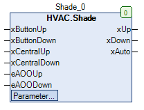

Shade (FB)¶
FUNCTION_BLOCK Shade
Kurzbeschreibung¶
Steuerung eines Jalousieantriebs mit Auf-/Zu-Befehlen und ZentralbedienungZusatzfunktionen: Lamellenverstellung / Zentralbedienung / KomfortfunktionenTypische Anwendung: Steuerung eines Standard-Jalousieantriebs
Darstellung¶

Schnittstellen¶
Eingänge¶
Name Datentyp Wertebereich Initialwert Funktion xButtonUp BOOL Anforderung - Jalousieöffnung über Taste xButtonDown BOOL Anforderung - Jalousieschliessung über Taste xCentralUp BOOL Anforderung - Jalousieöffnung über Zentralbedienung xCentralDown BOOL Anforderung - Jalousieschliessung über Zentralbedienung eAOOUp HVACTYPES.eManBin HVACTYPES.eManBin.Auto, HVACTYPES.eManBin.ManOff, HVACTYPES.eManBin.ManOn HVACTYPES.eManBin.Auto Betriebsart der Handübersteuerung - Hardware für die Jalousieöffnung eAOODown HVACTYPES.eManBin HVACTYPES.eManBin.Auto, HVACTYPES.eManBin.ManOff, HVACTYPES.eManBin.ManOn HVACTYPES.eManBin.Auto Betriebsart der Handübersteuerung - Hardware für die Jalousieschliessung
Ausgänge¶
Name Datentyp Wertebereich Initialwert Funktion xUp BOOL Freigabe - Jalousieöffnung xDown BOOL Freigabe - Jalousieschliessung xAuto BOOL Sammelmeldung Automatikbetrieb
Sollwerte / Parameter¶
Name Datentyp Wertebereich Initialwert Funktion tFullMovement TIME T#30s Zeitdauer für die vollständige Öffnung / Schliessung tPulse TIME T#600ms Zeitdauer des Impulses für die Lamellenverstellung tButton TIME T#900ms Zeitdauer für die Unterscheidung Lamellenverstellung / vollständige Öffnung/Schliessung tWaitReverse TIME T#2s Warte-Zeitdauer der Umschaltung zwischen Öffnung und Schliessung eManModeUp eMANBIN eMANBIN.Auto, eMANBIN.ManOff, eMANBIN.ManOn eMANBIN.Auto Betriebsart der Handübersteuerung - Jalousieöffnung eManModeDown eMANBIN eMANBIN.Auto, eMANBIN.ManOff, eMANBIN.ManOn eMANBIN.Auto Betriebsart der Handübersteuerung - Jalousieschliessung
Funktionsbeschreibung¶
Allgemeines¶
Dieser Funktionsbaustein steuert einen Jalousieantrieb mit Auf- ( xUp ) und Zu-Befehlen ( xDown ).
Die Auf- und Zu-Befehle können durch die Parameter eManModeUp bzw. eManModeDown unabhängig von den Automatikfunktionen übersteuert werden.
Die Bedienung erfolgt durch die Tasteneingänge xButtonUp und xButtonDown.
Übergeordnet ist eine Zentralbedienung über die Eingänge xCentralUp und xCentralDown möglich.
Die Zeitdauer der Betätigung der Eingänge xButtonUp und xButtonDown entscheidet über die ausgeführte Funktion
( Zeitdauer < tButton: vollständige Öffnung/Schliessung, Zeitdauer >= tButton: Lamellenverstellung ).
Es findet zusätzlich eine Zwangssteuerung der Ausgänge xUP und xDown statt, d.h. wenn der Ausgang xUp aktiv ( = TRUE ) ist,
so wird gleichzeitig der Ausgang xDown deaktiviert ( = FALSE ). Dies gilt auch für den umgekehrten Fall.
Wird während einer vollständigen Öffnung / Schliessung eine der beiden Tasten ( xButtonUp = TRUE und / oder xButtonDown = TRUE )
betätigt, so wird die Öffnung / Schliessung sofort unterbrochen.
Zentralbedienung¶
Jede ansteigende Flanke am Eingang Anforderung - Jalousieöffnung über Zentralbedienung xCentralUp löst die vollständige
Öffnung der Jalousie ( xUp = TRUE und xDown = FALSE während der Zeitdauer tFullMovement ) aus.
Jede ansteigende Flanke am Eingang Anforderung - Jalousieschliesung über Zentralbedienung xCentralDown löst die vollständige
Schliessung der Jalousie ( xDown = TRUE und xUp = FALSE während der Zeitdauer tFullMovement ) aus.
Sind die Eingänge für die Zentralbedienung dauerhaft aktiv ( = TRUE ), so ist keine Bedienung über die Tasten xButtonUp und xButtonDown möglich.
Warte-Zeitdauer der Umschaltung zwischen Öffnung und Schliessung tWaitReverse¶
Die Umschaltung von der Öffnung zur Schliessung der Jalousie und umgekehrt kann durch diesen Sollwert / Parameter zeitlich verzögert werden.
Der Wert 0.0s erlaubt die unmittelbare Umschaltung.
Lamellenverstellung¶
Die Lamellenverstellung wird durch eine durchgehende Betätigung der Bedientasten xUp oder xDown während einer Zeitdauer größer als
Zeitdauer für die Unterscheidung Lamellenverstellung / vollständige Öffnung/Schliessung tButton ausgelöst.
Während der Betätigung der jeweiligen Taste wird am zugeordneten Ausgang ein symmetrisches Ausgangssignal ( Pausendauer = Impulsdauer = tPulse ) erzeugt.
Vollständige Öffnung / Schliessung¶
Die vollständige Öffnung / Schliessung wird durch eine Betätigung der jeweils zugeordneten Tasten xUp bzw. xDown während eines Zeitraums kleiner
als Zeitdauer für die Unterscheidung Lamellenverstellung / vollständige Öffnung/Schliessung tButton ausgelöst.
Am entsprechenden Ausgang wird dann ohne weitere Beeinflussung ein Signal ( Zustand = TRUE ) mit einer Zeitdauer von tFullMovement erzeugt.
Am jeweils anderen Ausgang wird während dieser Zeitdauer kein Signal ( Zustand = FALSE ) erzeugt.
Sammelmeldung Automatikbetrieb xAuto¶
Die Sammelmeldung Automatikbetrieb xAuto wird aktiviert ( = TRUE ), falls folgende Bedingungen gleichzeitig erfüllt sind:
- Eingang eAOOUp = HVACTYPES.eManBin.Auto
- Eingang eAOODown = HVACTYPES.eManBin.Auto
- Sollwert / Parameter eManModeUp = eMANBIN.Auto
- Sollwert / Parameter eManModeDown = eMANBIN.Auto
Visualisierung¶
Codesys¶
- InOut:
Scope Name Type Initial Comment Input xButtonUp BOOL Anforderung - Jalousieöffnung über Taste xButtonDown BOOL Anforderung - Jalousieschliessung über Taste xCentralUp BOOL Anforderung - Jalousieöffnung über Zentralbedienung xCentralDown BOOL Anforderung - Jalousieschliessung über Zentralbedienung eAOOUp eManBin Betriebsart der Handübersteuerung - Hardware für die Jalousieöffnung eAOODown eManBin Betriebsart der Handübersteuerung - Hardware für die Jalousieschliessung Output xUp BOOL Freigabe - Jalousieöffnung xDown BOOL Freigabe - Jalousieschliessung xAuto BOOL Sammelmeldung Automatikbetrieb Input tFullMovement TIME TIME#30s0ms Zeitdauer für die vollständige Öffnung / Schliessung tPulse TIME TIME#600ms Zeitdauer des Impulses für die Lamellenverstellung tButton TIME TIME#900ms Zeitdauer für die Unterscheidung Lamellenverstellung / vollständige Öffnung/Schliessung tWaitReverse TIME TIME#2s0ms Warte-Zeitdauer der Umschaltung zwischen Öffnung und Schliessung eManModeUp eMANBIN eMANBIN.Auto Betriebsart der Handübersteuerung - Jalousieöffnung eManModeDown eMANBIN eMANBIN.Auto Betriebsart der Handübersteuerung - Jalousieschliessung